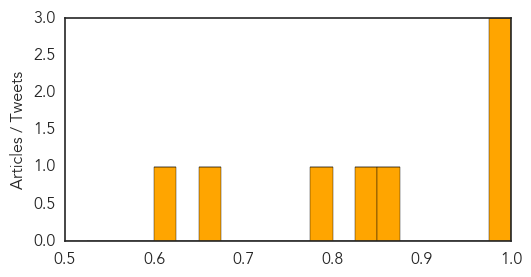
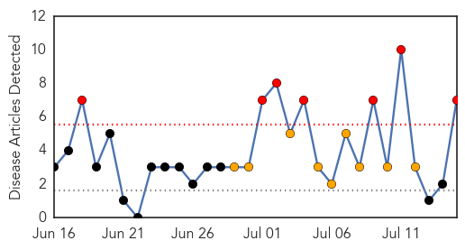
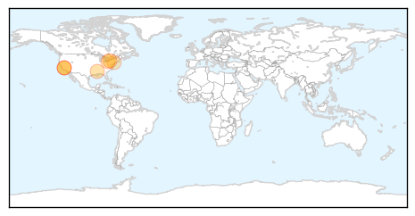

Dengue Fever
30-Day Web Trend
5 alerts, 5 warnings

30-Day Twitter Trend
4 alerts, 0 warnings

Article Locations

Article Confidences
Top Articles:
- 0.995
- Dengue virus hits harder in round two
- 0.988
- Trinidad and Tobago's Newsday
- 0.976
- Illegal Immigrants Bring Serious New Threats
- 0.859
- Could reading a newspaper save you from dengue fever?
- 0.848
- Public healthcare: Special staff to be hired for dengue surveillance
- 0.777
- Trial: Dengue shot offers some protection
- 0.656
- No respite from dengue as cases rise to 19 in Mingora
- 0.607
- Guatemalan Red Cross continues providing assistance to those affected by the earthquake - Guatemala
Top Tweets:
-
No tweets found for Jul 15, 2014
West Nile Virus
30-Day Web Trend
7 alerts, 9 warnings

30-Day Twitter Trend
0 alerts, 0 warnings

Article Locations
Article Confidences

Top Articles:
- 1.000
- West Nile Virus Human Infections Now in Seven States
- 0.962
- Year's first West Nile case in Santa Cruz County confirmed
- 0.960
- West Nile Virus found in NYC mosquitoes
- 0.905
- Harborcreek Mosquitoes Test Positive for West Nile Virus - Erie News Now: News, Weather & Sports
- 0.803
- West Nile virus discovered in Douglaston and College Point
- 0.758
- West Nile's record season has residents concerned about fogging
- 0.758
- West Nile's record season has residents concerned about fogging
Top Tweets:
-
No tweets found for Jul 15, 2014